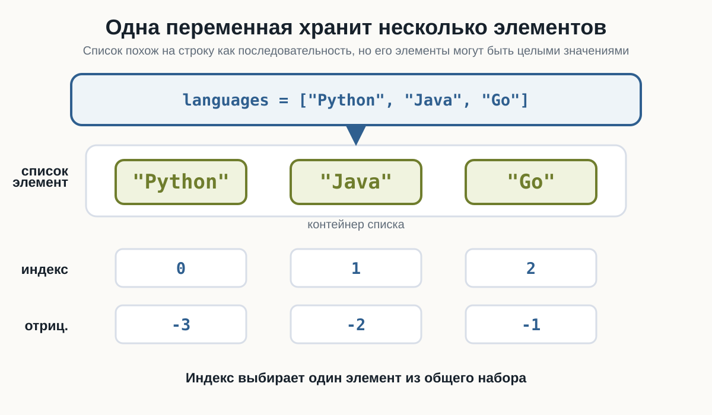
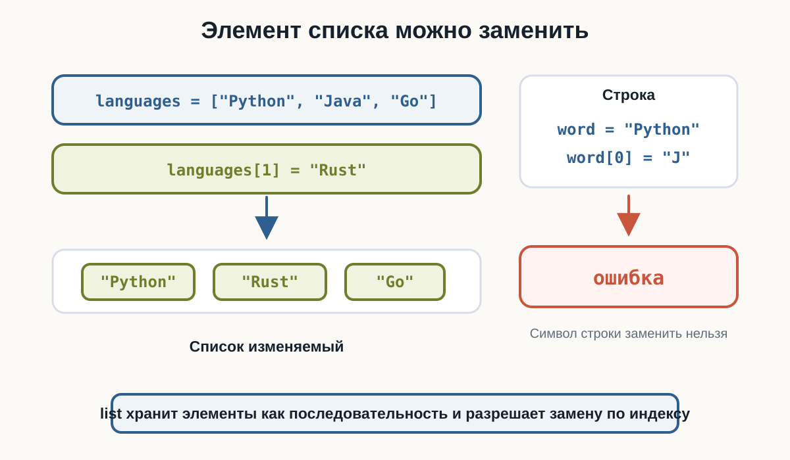
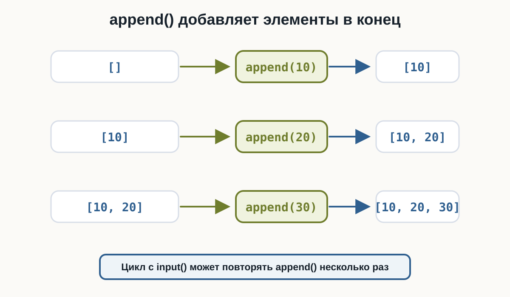
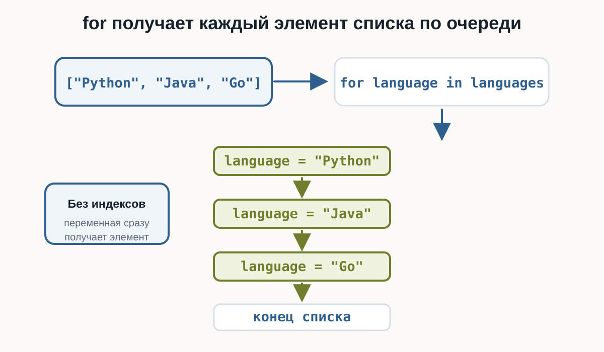
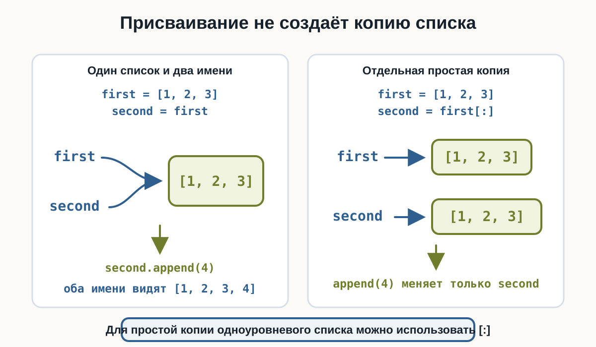

2 Списки
Главный вопрос главы:
Как хранить несколько значений в одной переменной и работать с ними как с единым набором?
До сих пор одна переменная обычно хранила одно значение.
Например:
name = "Анна"
age = 25
price = 199.9Но часто программе нужно работать сразу с несколькими значениями.
Например:
несколько имён
несколько цен
несколько результатов
несколько задач
несколько городовМожно было бы создать много отдельных переменных:
city1 = "Москва"
city2 = "Казань"
city3 = "Самара"Но такой подход быстро становится неудобным.
В Python для хранения нескольких значений существует список.
2.1 Первый список
Список создаётся с помощью квадратных скобок:
cities = ["Москва", "Казань", "Самара"]Здесь одна переменная:
citiesсодержит сразу три значения.
Выведем список:
cities = ["Москва", "Казань", "Самара"]
print(cities)Результат:
['Москва', 'Казань', 'Самара']2.2 Тип list
Списки имеют тип:
listПроверим:
cities = ["Москва", "Казань", "Самара"]
print(type(cities))Результат:
<class 'list'>Получается:
["Москва", "Казань", "Самара"]
↓
listВ HTML-версии можно сразу проверить несколько списков: со строками, с числами и пустой список.
2.3 Элементы списка
Значения внутри списка называются элементами.
Например:
numbers = [10, 20, 30]Здесь три элемента:
10
20
30В списке:
languages = ["Python", "Java", "Go"]элементами являются строки.
Можно представить:

2.4 В списке могут храниться числа
Например:
prices = [100, 250, 79, 500]
print(prices)Результат:
[100, 250, 79, 500]Или дробные числа:
temperatures = [18.5, 20.1, 17.8]2.5 Список может содержать значения разных типов
Python позволяет написать:
data = ["Анна", 25, 1.68, True]Здесь находятся:
str
int
float
boolТакой список технически допустим.
Но в учебных и реальных программах часто удобнее, когда элементы списка имеют один общий смысл.
Например:
prices = [100, 250, 79]или:
names = ["Анна", "Максим", "Олег"]Технически список может содержать разные типы:
["Анна", 25, True]Но обычно понятнее хранить вместе значения, которые относятся к одной задаче:
names = ["Анна", "Максим", "Олег"]или:
scores = [90, 75, 82]2.6 Пустой список
Список может не содержать элементов:
items = []Это пустой список.
Проверим:
items = []
print(items)
print(type(items))Результат:
[]
<class 'list'>Пустой список часто используется как начало набора, который будет заполняться позже.
2.7 Индексы списка
Как и строки, списки используют индексы.
Рассмотрим:
languages = ["Python", "Java", "Go"]Индексы:
элемент: Python Java Go
индекс: 0 1 2Индексация снова начинается с:
02.8 Получение элемента по индексу
Например:
languages = ["Python", "Java", "Go"]
print(languages[0])Результат:
PythonДругие примеры:
print(languages[1])
print(languages[2])Результат:
Java
Go2.9 Отрицательные индексы
Списки поддерживают отрицательные индексы так же, как строки.
Например:
languages = ["Python", "Java", "Go"]
print(languages[-1])
print(languages[-2])Результат:
Go
JavaПроверьте положительные и отрицательные индексы в playground.
Для списка:
["Python", "Java", "Go"]можно представить:
индекс: 0 1 2
Python Java Go
отриц.: -3 -2 -12.10 Ошибка индекса
Если обратиться к несуществующему элементу:
languages = ["Python", "Java", "Go"]
print(languages[10])возникнет:
IndexErrorПричина та же, что и со строками: такого индекса нет.
2.11 Длина списка
Функция:
len()работает и со списками.
Например:
languages = ["Python", "Java", "Go"]
print(len(languages))Результат:
3Пустой список:
items = []
print(len(items))Результат:
02.12 Списки можно изменять
Здесь появляется важное отличие от строк.
Строки неизменяемые:
word = "Python"
word[0] = "J"не работает.
Но элемент списка изменить можно:
languages = ["Python", "Java", "Go"]
languages[1] = "Rust"
print(languages)Результат:
['Python', 'Rust', 'Go']
Строку нельзя изменить по индексу:
word[0] = "J"А список можно:
languages[0] = "Rust"Это одно из важных различий между str и list.
2.13 Изменение элемента
Например:
prices = [100, 200, 300]
prices[1] = 250
print(prices)Результат:
[100, 250, 300]Изменяется только выбранный элемент.
2.14 append()
Чтобы добавить новый элемент в конец списка, используется метод:
append()Например:
languages = ["Python", "Java"]
languages.append("Go")
print(languages)Результат:
['Python', 'Java', 'Go']Можно представить:
["Python", "Java"]
↓
append("Go")
↓
["Python", "Java", "Go"]2.15 Добавление пользовательского значения
Например:
names = []
name = input("Введите имя: ")
names.append(name)
print(names)Если пользователь введёт:
Аннаполучим:
['Анна']2.16 append() внутри цикла
Список особенно полезен вместе с циклами.
Например:
numbers = []
for i in range(3):
number = int(input("Введите число: "))
numbers.append(number)
print(numbers)Если пользователь введёт:
10
20
30результат:
[10, 20, 30]Здесь список постепенно заполняется.
Попробуйте изменить добавляемые языки и ввести свои числа.

2.17 insert()
Метод:
insert()позволяет добавить элемент в определённую позицию.
Например:
languages = ["Python", "Go"]
languages.insert(1, "Java")
print(languages)Результат:
['Python', 'Java', 'Go']Синтаксис:
список.insert(индекс, значение)2.18 Разница между append() и insert()
append() добавляет в конец:
items.append(value)insert() добавляет в указанную позицию:
items.insert(index, value)Например:
numbers = [10, 30]
numbers.append(40)получим:
[10, 30, 40]А:
numbers.insert(1, 20)даст:
[10, 20, 30, 40]2.19 Удаление по значению: remove()
Метод:
remove()удаляет элемент по его значению.
Например:
languages = ["Python", "Java", "Go"]
languages.remove("Java")
print(languages)Результат:
['Python', 'Go']2.20 remove() удаляет первое совпадение
Рассмотрим:
numbers = [10, 20, 10, 30]
numbers.remove(10)
print(numbers)Результат:
[20, 10, 30]Удалилось только первое значение:
102.21 Если значения нет
Например:
languages = ["Python", "Java"]
languages.remove("Go")Такого элемента нет.
Python сообщит об ошибке:
ValueErrorПоэтому перед удалением иногда полезно сначала проверить:
if "Go" in languages:
languages.remove("Go")2.22 Удаление по индексу: pop()
Метод:
pop()может удалить элемент по индексу и вернуть его.
Например:
languages = ["Python", "Java", "Go"]
removed = languages.pop(1)
print(removed)
print(languages)Результат:
Java
['Python', 'Go']Проверьте удаление по индексу и удаление первого совпадающего значения.
2.23 pop() без индекса
Если индекс не указан:
languages.pop()удаляется последний элемент.
Например:
languages = ["Python", "Java", "Go"]
removed = languages.pop()
print(removed)
print(languages)Результат:
Go
['Python', 'Java']2.24 clear()
Чтобы удалить все элементы:
clear()Например:
numbers = [10, 20, 30]
numbers.clear()
print(numbers)Результат:
[]Сам список остаётся существовать, но становится пустым.
2.25 Проверка элемента с in
Оператор:
inработает и со списками.
Например:
languages = ["Python", "Java", "Go"]
print("Python" in languages)Результат:
TrueА:
print("Rust" in languages)даёт:
False2.26 not in
Можно проверить отсутствие:
languages = ["Python", "Java", "Go"]
print("Rust" not in languages)Результат:
TrueЭто удобно вместе с if:
if "Python" in languages:
print("Python найден")2.27 Перебор списка через for
for отлично подходит для списков.
Например:
languages = ["Python", "Java", "Go"]
for language in languages:
print(language)Результат:
Python
Java
GoНа каждой итерации:
languageполучает очередной элемент списка.
2.28 Как for перебирает список
Можно представить:
["Python", "Java", "Go"]
↓
for
↓
language = "Python"
↓
language = "Java"
↓
language = "Go"
↓
конецЗдесь не нужно использовать индексы.

2.29 Когда индекс не нужен
Если нужно просто обработать каждый элемент:
for language in languages:
print(language)обычно лучше перебирать сами значения.
Необязательно писать:
for i in range(len(languages)):
print(languages[i])Такой вариант тоже возможен, но для простой обработки элементов он сложнее.
Если индекс не нужен, обычно проще:
for item in items:
print(item)чем:
for i in range(len(items)):
print(items[i])2.30 Перебор по индексам
Иногда индекс действительно нужен.
Например:
languages = ["Python", "Java", "Go"]
for i in range(len(languages)):
print(i, languages[i])Результат:
0 Python
1 Java
2 GoЗдесь:
range(len(languages))даёт:
0
1
22.31 Изменение элементов по индексам
Если нужно изменить каждый элемент списка, индексы могут быть полезны.
Например:
numbers = [1, 2, 3]
for i in range(len(numbers)):
numbers[i] = numbers[i] * 2
print(numbers)Результат:
[2, 4, 6]Здесь изменяется сам список.
2.32 Срезы списков
Списки поддерживают срезы так же, как строки.
Например:
numbers = [10, 20, 30, 40, 50]
print(numbers[1:4])Результат:
[20, 30, 40]Правая граница снова не включается.
2.33 Другие срезы
numbers = [10, 20, 30, 40, 50]
print(numbers[:3])
print(numbers[2:])
print(numbers[-2:])
print(numbers[::-1])Результат:
[10, 20, 30]
[30, 40, 50]
[40, 50]
[50, 40, 30, 20, 10]Поменяйте границы среза и проверьте, что stop не включается.
Правила очень похожи на строки.
2.34 Срез создаёт новый список
Например:
numbers = [10, 20, 30, 40]
part = numbers[1:3]
print(part)Результат:
[20, 30]part — отдельный список.
2.35 Объединение списков
Оператор:
+может объединять списки.
Например:
first = [1, 2]
second = [3, 4]
result = first + second
print(result)Результат:
[1, 2, 3, 4]2.36 Повторение списка
Оператор:
*может повторять элементы списка.
Например:
numbers = [1, 2]
print(numbers * 3)Результат:
[1, 2, 1, 2, 1, 2]Это похоже на повторение строк:
"Hi" * 32.37 count()
Метод:
count()подсчитывает количество элементов с определённым значением.
Например:
numbers = [10, 20, 10, 30, 10]
print(numbers.count(10))Результат:
32.38 index()
Метод:
index()возвращает индекс первого совпадения.
Например:
languages = ["Python", "Java", "Go"]
print(languages.index("Java"))Результат:
1Если значения нет, возникнет:
ValueError2.39 Сортировка списка
Метод:
sort()сортирует сам список.
Например:
numbers = [30, 10, 20]
numbers.sort()
print(numbers)Результат:
[10, 20, 30]2.40 sort() изменяет список
Это отличается от многих методов строк.
Например:
numbers = [3, 1, 2]
numbers.sort()
print(numbers)Сам numbers теперь:
[1, 2, 3]Методы списков часто изменяют сам список:
append()
remove()
pop()
clear()
sort()Это отличается от строк, где методы вроде:
upper()
lower()
replace()создают новые строковые значения.
2.41 Сортировка строк
Можно сортировать и список строк:
names = ["Олег", "Анна", "Максим"]
names.sort()
print(names)Python упорядочит строки согласно своим правилам сравнения.
На этом этапе достаточно понимать сам факт сортировки.
2.42 reverse()
Метод:
reverse()изменяет порядок элементов на обратный.
Например:
numbers = [1, 2, 3, 4]
numbers.reverse()
print(numbers)Результат:
[4, 3, 2, 1]Соберём несколько методов в одном компактном примере.
Можно также использовать срез:
numbers[::-1]Но между этими подходами есть различие:
reverse()изменяет существующий список.
Срез создаёт новый список.
2.43 sum()
Для списка чисел можно использовать:
sum()Например:
numbers = [10, 20, 30]
print(sum(numbers))Результат:
60Это короче, чем писать накопитель вручную.
2.44 min() и max()
Функция:
min()находит минимальное значение.
max()— максимальное.
Например:
numbers = [12, 5, 30, 8]
print(min(numbers))
print(max(numbers))Результат:
5
302.45 Среднее значение
Отдельной встроенной функции среднего в этом базовом наборе нет.
Но можно вычислить:
numbers = [10, 20, 30]
average = sum(numbers) / len(numbers)
print(average)Результат:
20.0Здесь объединяются:
sum()
len()
/2.46 Важный случай: пустой список
Рассмотрим:
numbers = []
average = sum(numbers) / len(numbers)Получается:
0 / 0Это приведёт к:
ZeroDivisionErrorПоэтому перед таким вычислением нужно убедиться, что список не пуст.
Например:
numbers = []
if len(numbers) > 0:
average = sum(numbers) / len(numbers)
print(average)
else:
print("Список пуст")2.47 bool списка
Мы уже знаем:
bool("")для пустой строки даёт:
FalseСо списками работает похожее правило.
Пустой список:
bool([])даёт:
FalseНепустой:
bool([1, 2])даёт:
TrueПоэтому позже можно встретить:
if numbers:
print("В списке есть элементы")На текущем этапе можно читать это как:
если список не пуст.
2.48 Проверка пустого списка
Есть несколько понятных вариантов.
Например:
if len(numbers) > 0:
print("Список не пуст")Или:
if numbers:
print("Список не пуст")Второй вариант очень распространён в Python.
[]в логическом контексте считается False.
Поэтому:
if items:
print("Есть элементы")выполнится только для непустого списка.
2.49 Создание списка из пользовательского ввода
Например, пользователь вводит три числа:
numbers = []
for i in range(3):
number = float(input("Введите число: "))
numbers.append(number)
print(numbers)Пример:
Введите число: 10
Введите число: 20
Введите число: 30
[10.0, 20.0, 30.0]Теперь все введённые значения сохранены и доступны после завершения цикла.
2.50 Почему это лучше одного накопителя
В прошлых главах мы могли написать:
total = 0
for i in range(3):
number = float(input("Введите число: "))
total += numberПосле цикла у нас есть только итоговая сумма.
Но если использовать список:
numbers = []
for i in range(3):
number = float(input("Введите число: "))
numbers.append(number)после цикла доступны все значения.
Например:
print(numbers)
print(sum(numbers))
print(min(numbers))
print(max(numbers))Список сохраняет данные для дальнейшей обработки.
2.51 Пример: оценки
scores = [85, 90, 72, 100, 88]
print("Количество:", len(scores))
print("Сумма:", sum(scores))
print("Минимум:", min(scores))
print("Максимум:", max(scores))
average = sum(scores) / len(scores)
print("Среднее:", average)Это уже похоже на небольшую обработку набора данных.
2.52 Пример: список покупок
products = ["Хлеб", "Молоко", "Сыр"]
for product in products:
print("-", product)Результат:
- Хлеб
- Молоко
- СырМожно добавить новый товар:
products.append("Кофе")или удалить:
products.remove("Молоко")2.53 Пример: поиск элемента
products = ["Хлеб", "Молоко", "Сыр"]
product = input("Что ищем? ")
if product in products:
print("Товар найден")
else:
print("Такого товара нет")Здесь объединяются:
input()
↓
список
↓
in
↓
True / False
↓
if2.54 Пример: фильтрация значений
Пока не будем создавать отдельный новый список, но можем вывести только подходящие значения.
Например:
numbers = [3, 10, 7, 20, 2]
for number in numbers:
if number >= 10:
print(number)Результат:
10
20Позже мы научимся сохранять такие выбранные значения в отдельный список более системно.
2.55 Изменение списка во время перебора
Рассмотрим идею:
numbers = [1, 2, 3, 4]Можно захотеть удалять элементы прямо внутри:
for number in numbers:
...Но изменение размера списка во время его перебора может привести к неожиданному поведению.
На этом этапе лучше придерживаться простого правила:
Пока вы изучаете списки, избегайте конструкций вроде:
for item in items:
items.remove(item)Перебор и одновременное удаление могут привести к пропуску элементов.
Сначала завершите перебор или используйте другой подход.
2.56 Копия списка
Рассмотрим:
numbers = [1, 2, 3]
copy = numbers[:]
print(copy)Результат:
[1, 2, 3]Срез:
[:]создаёт новый список с теми же элементами.
Для простых значений это удобный способ сделать копию списка.
2.57 Присваивание — не копия
Рассмотрим:
first = [1, 2, 3]
second = first
second.append(4)
print(first)
print(second)Результат:
[1, 2, 3, 4]
[1, 2, 3, 4]Почему изменились оба?
Потому что:
second = firstне создаёт новый список.
Оба имени связаны с одним списком.
Можно представить:
first ──┐
├──→ [1, 2, 3]
second ─┘2.58 Настоящая простая копия
Если нужен отдельный список:
first = [1, 2, 3]
second = first[:]
second.append(4)
print(first)
print(second)Результат:
[1, 2, 3]
[1, 2, 3, 4]Теперь списки разные.
Проверьте обе ситуации рядом: присваивание имени и простую копию через срез.

second = firstозначает, что два имени ссылаются на один и тот же список.
Для простой копии одноуровневого списка можно использовать:
second = first[:]К более сложным случаям копирования вернёмся позже.
2.59 Что важно запомнить
Список — это значение типа:
listОн позволяет хранить несколько элементов:
numbers = [10, 20, 30]Элементы имеют индексы:
10 20 30
0 1 2Получение элемента:
numbers[0]
numbers[-1]Длина:
len(numbers)Списки изменяемые:
numbers[0] = 100Основные методы:
append()
insert()
remove()
pop()
clear()
count()
index()
sort()
reverse()Полезные функции:
len()
sum()
min()
max()Перебор:
for item in items:
print(item)Проверка:
item in items
item not in itemsСрез:
items[start:stop:step]И самое важное:
Список позволяет сохранить несколько связанных значений и затем обрабатывать их как единый набор данных.
2.59.1 Практические задания
Задание 1. Первый и последний элемент
Дан список:
languages = ["Python", "Java", "Go", "Rust"]Выведите первый и последний элементы.
languages = ["Python", "Java", "Go", "Rust"]
print(languages[0])
print(languages[-1])Задание 2. Изменение элемента
Дан список:
numbers = [10, 20, 30]Замените 20 на 25.
numbers = [10, 20, 30]
numbers[1] = 25
print(numbers)Результат:
[10, 25, 30]Задание 3. Добавление элемента
Создайте список:
cities = ["Москва", "Казань"]Добавьте:
Самарав конец списка.
cities = ["Москва", "Казань"]
cities.append("Самара")
print(cities)Задание 4. Удаление элемента
Дан список:
languages = ["Python", "Java", "Go"]Удалите "Java".
languages = ["Python", "Java", "Go"]
languages.remove("Java")
print(languages)Результат:
['Python', 'Go']Задание 5. Перебор списка
Дан список:
names = ["Анна", "Максим", "Олег"]Выведите каждое имя на отдельной строке.
names = ["Анна", "Максим", "Олег"]
for name in names:
print(name)Задание 6. Сумма элементов
Дан список:
numbers = [10, 20, 30, 40]Выведите сумму всех элементов.
numbers = [10, 20, 30, 40]
print(sum(numbers))Результат:
100Задание 7. Минимум и максимум
Дан список:
numbers = [15, 3, 28, 9, 12]Выведите минимальное и максимальное значения.
numbers = [15, 3, 28, 9, 12]
print("Минимум:", min(numbers))
print("Максимум:", max(numbers))Задание 8. Среднее значение
Дан список:
scores = [80, 90, 70, 100]Вычислите среднее значение.
scores = [80, 90, 70, 100]
average = sum(scores) / len(scores)
print("Среднее:", average)Результат:
Среднее: 85.0Задание 9. Проверка элемента
Дан список:
languages = ["Python", "Java", "Go"]Попросите пользователя ввести язык программирования и проверьте, есть ли он в списке.
languages = ["Python", "Java", "Go"]
language = input("Введите язык: ")
if language in languages:
print("Язык найден")
else:
print("Языка нет в списке")Задание 10. Создание списка через input()
Создайте пустой список.
Попросите пользователя ввести три числа и добавьте их в список.
Затем выведите весь список.
numbers = []
for i in range(3):
number = float(input("Введите число: "))
numbers.append(number)
print(numbers)Задание 11. Только большие числа
Дан список:
numbers = [4, 15, 2, 30, 8, 21]Выведите только значения больше 10.
numbers = [4, 15, 2, 30, 8, 21]
for number in numbers:
if number > 10:
print(number)Результат:
15
30
21Задание 12. Срез списка
Дан список:
numbers = [10, 20, 30, 40, 50]Выведите:
[20, 30, 40]с помощью среза.
numbers = [10, 20, 30, 40, 50]
print(numbers[1:4])Задание 13. Разворот списка
Дан список:
numbers = [1, 2, 3, 4, 5]Получите новый список в обратном порядке с помощью среза.
numbers = [1, 2, 3, 4, 5]
reversed_numbers = numbers[::-1]
print(reversed_numbers)Результат:
[5, 4, 3, 2, 1]Задание 14. Найдите проблему
Что произойдёт?
numbers = [10, 20, 30]
print(numbers[3])Почему?
Список содержит три элемента.
Их индексы:
10 20 30
0 1 2Индекса:
3нет.
Поэтому возникнет:
IndexErrorЗадание 15. Присваивание и копия
Какой результат будет здесь?
first = [1, 2, 3]
second = first
second.append(4)
print(first)Сначала попробуйте ответить без запуска.
Результат:
[1, 2, 3, 4]Запись:
second = firstне создаёт новый список.
Оба имени ссылаются на один список.
Поэтому изменение через second видно и через first.
Если нужен отдельный список:
second = first[:]Задание 16. Задача со звёздочкой
Пользователь вводит пять чисел.
Сохраните их в список.
После ввода выведите:
- весь список;
- количество элементов;
- сумму;
- минимальное число;
- максимальное число;
- среднее значение.
numbers = []
for i in range(5):
number = float(input("Введите число: "))
numbers.append(number)
print("Список:", numbers)
print("Количество:", len(numbers))
print("Сумма:", sum(numbers))
print("Минимум:", min(numbers))
print("Максимум:", max(numbers))
average = sum(numbers) / len(numbers)
print("Среднее:", average)Здесь объединяется сразу несколько изученных тем:
input()
↓
float()
↓
for
↓
append()
↓
list
↓
len() / sum() / min() / max()2.60 Что дальше?
Теперь программа умеет хранить несколько связанных значений в одном списке:
numbers = [10, 20, 30]Но в примерах главы код уже начинает повторяться.
Например, одни и те же действия можно захотеть выполнить в разных местах программы:
получить данные
↓
проверить их
↓
посчитать результат
↓
вывести ответСледующая тема — функции.
Функция позволяет дать имя фрагменту программы и вызывать его снова, когда он нужен.